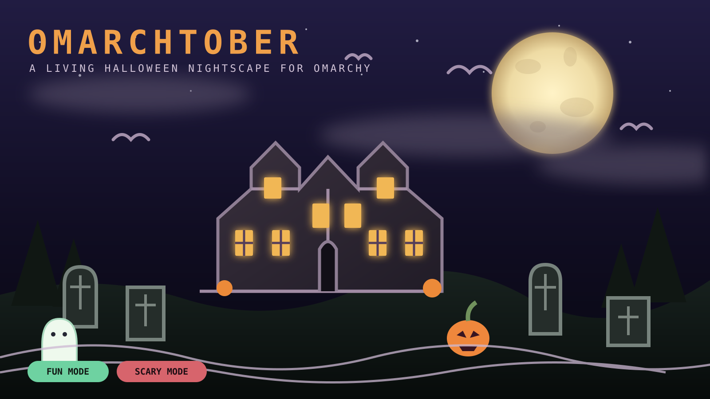

All atmosphere.
No nightmares.
Friendly ghosts, costumed walkers, colored lights, smiling pumpkins, gentle thunder, and soft owl calls. No blood, skeletons, zombies, threatening faces, or jump scares.
A living Halloween nightscape for Omarchy
A full moon. A Victorian manor. Bats, fog, pumpkins, graves, and visitors who change when the kids are watching.
omarchy plugin add https://github.com/DailenG/omarchtober --enable

FUN ↔ SCARYOne switch. A different night.
Friendly ghosts, costumed walkers, colored lights, smiling pumpkins, gentle thunder, and soft owl calls. No blood, skeletons, zombies, threatening faces, or jump scares.
Grave risers, restless undead silhouettes, darker calls, deep thunder, and restrained blood accents bring the same estate into a more unsettling register.
Resolution-aware composition
The renderer adds scenery and enlarges architecture on tall displays. Exact creature counts remain yours.
Scene platform
Moonlit Victorian exterior, graveyard, pumpkins, moving clouds, stars, bats, emergers, and walkers.
Crooked paths, cauldron clearing, ravens, owls, lanterns, and a distant cabin.
A gentle harvest village designed to make Fun mode the main event.
Close facade, animated windows, webs, moving curtains, and hidden silhouettes.
Designed for contributors and agents
The scene contract covers deterministic rendering, safety modes, adaptive layouts, resource bounds, tests, registration, and documentation. A copy-ready prompt lets an Omarchy AI agent implement an original scene without inventing parallel infrastructure.
Read the scene guide